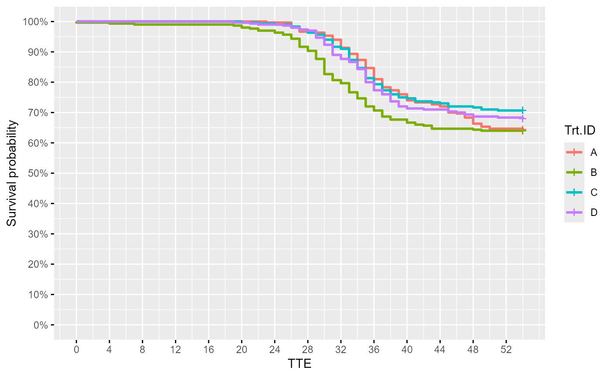
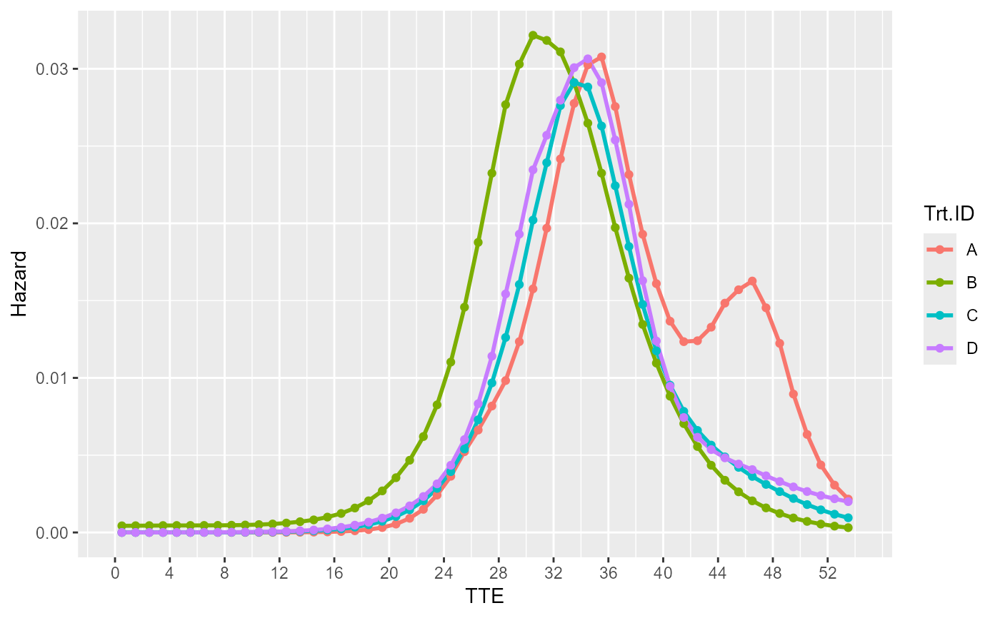

Produces a Kaplan-Meier Survival Plot and/or Hazard Time Plot from survival data. Each plot contains multiple curves for the different treatment groups. Plots saved automatically to working directory.
A survival dataframe as described in Details.
A string specifying the prefix for the filename of the saved plots.
A vector specifying the plots x-axis lower and upper limits, respectively.
A vector specifying the Survival Plot y-axis lower and upper limits, respectively.
A string specifying the plot x-axis label.
Smoothing value for the hazard curve. Higher lambda produces greater smoothing. Defaults to NULL where bshazard() uses the provided survival data to estimate lambda; NULL specification is recommended for large sample size situations which usually occurs on our full-scale studies with many mortalities and tank-replication. At low sample sizes, the lambda estimate can be unreliable. Choosing a lambda of 10 (or anywhere between 1-100) probably produces the most accurate hazard curve for these situations. In place of choosing lambda, choosing phi is recommended; see below.
Dispersion parameter for the count model used in hazard curve estimation. Defaults to NULL where bshazard() uses the provided survival data to estimate phi; NULL specification is recommended for large sample size situations. At low sample sizes, the phi estimate can be unreliable. Choosing a phi value of 1 for low sample sizes is recommended. This value of 1 (or close) seems to be that estimated in past Tenaci data (QCATC997; phi ~ 0.8-1.4) where there are large sample sizes with tank-replication. The phi value of 1 indicates the set of counts (deaths) over time have a Poisson distribution, following the different hazard rates along the curve and are not overdispersed (phi > 1).
Whether to set time bins at daily (1 TTE) intervals. Refer to the bshazard() documentation for an understanding on the role of bins to hazard curve estimation. Please set to TRUE at low sample sizes and set to FALSE at large sample sizes with tank-replication. Defaults to TRUE.
Which plot to output. Use "surv" for the Kaplan-Meier Survival Curve, "haz" for the Hazard Curve, or "both" for both. Defaults to "both".
Vector of color codes for the different treatment groups in the plot. Defaults to ggplot2 default palette.
Character string specifying the graphics theme for the plots. Theme "ggplot2" and "prism" currently available. Defaults to "ggplot2".
Vector representing the order of treatment groups in the plots. Defaults to NULL where alphabetical order is used.
Whether to print out the survival and/or hazard databases illustrated by the plots. Defaults to FALSE.
Vector representing the dimensions (width, height) with which to save the plot in .tiff and .pptx.
By default, with argument plot = "both", returns the Kaplan-Meier Survival Curve and the Hazard Curve. Output can be trimmed by setting plot = "haz" or plot = "surv".
If data_out = TRUE, returns a list of the plot(s) and the associated dataframes to create them.
The survival dataset should be a dataframe containing at least 4 different columns:
"Trt.ID" = Labels for treatment groups in the study.
"Tank.ID" = Labels for tanks in the study (each tank must have a unique label).
"TTE" = Time to Event. Event depends on "Status".
"Status" = Value indicating what happened at TTE. 1 for dead fish, 0 for survivors or those sampled and removed.
Each row should represent one fish. For an example dataframe, execute data(surv_db_ex) and view.
For details on the statistical methodology used by bshazard(), refer to: here.
General concept: h(t) the hazard function is considered in an count model with the number of deaths as the response variable. I.e, death_count(t) = h(t) * P(t) where P(t) is the number alive as a function of time and h(t) is modeled over time using basis splines. The basis spline curvatures is assumed to have a normal distribution with mean 0 (a random effect). Based on this assumption, the author found that the variance of curvatures (i.e. smoothness) is equal to the over-dispersion (phi) of the death counts related (divided) by some smoothness parameter (lambda). Phi and lambda can be estimated from the data or specified by the user. Specification can be helpful in low sample size situations where overdispersion (phi) estimates have been found to be unreliable and clearly wrong (based on my understanding of realistic estimates and what was estimated in past data with adequate, large sample sizes).
#Starting from an example mortality database, we first generate the complete survivor data using Surv_Gen()
data(mort_db_ex)
surv_dat = Surv_Gen(mort_db = mort_db_ex,
starting_fish_count = 100,
last_tte = 54)
#Create plot by inputting surv_dat into Surv_Plots()!
Surv_Plots(surv_db = surv_dat,
plot_prefix = "QCATC777",
xlim = c(0, 54),
ylim = c(0, 1),
xlab = "TTE",
phi = 1,
plot = "both")
#> Warning: package 'gdtools' was built under R version 4.4.1
#> NOTE: entry.status has been set to 0 for all.
#> NOTE: entry.status has been set to 0 for all.
#> NOTE: Dropping 1 rows with duration of follow up < tol
#> NOTE: entry.status has been set to 0 for all.
#> NOTE: entry.status has been set to 0 for all.
#> $Survival_Plot

#>
#> $Hazard_Plot

#>